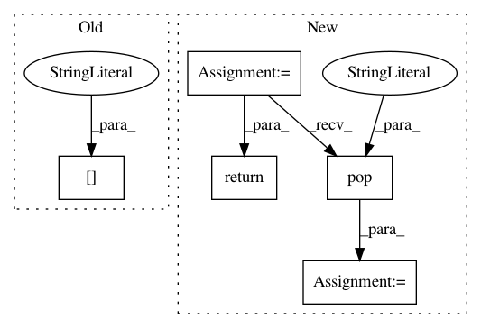

fc64d0ba9a07fb9df00dbe63d83f520ec3dbfa77,autokeras/adapters/input_adapter.py,StructuredDataInputAdapter,from_config,#Any#Any#,127
Before Change
obj.count_numerical = config["count_numerical"]
obj.count_categorical = config["count_categorical"]
obj.count_unique_numerical = config["count_unique_numerical"]
obj.num_col = config["num_col"]
def check(self, x):
if not isinstance(x, (pd.DataFrame, np.ndarray, tf.data.Dataset)):
raise TypeError(
After Change
@classmethod
def from_config(cls, config):
count_numerical = config.pop("count_numerical")
count_categorical = config.pop("count_categorical")
count_unique_numerical = config.pop("count_unique_numerical")
num_col = config.pop("num_col")
obj = super().from_config(config)
obj.count_numerical = count_numerical
obj.count_categorical = count_categorical
obj.count_unique_numerical = count_unique_numerical
obj.num_col = num_col
return obj
def check(self, x):
if not isinstance(x, (pd.DataFrame, np.ndarray, tf.data.Dataset)):
raise TypeError(
In pattern: SUPERPATTERN
Frequency: 5
Non-data size: 5
Instances
Project Name: keras-team/autokeras
Commit Name: fc64d0ba9a07fb9df00dbe63d83f520ec3dbfa77
Time: 2020-08-01
Author: jin@tamu.edu
File Name: autokeras/adapters/input_adapter.py
Class Name: StructuredDataInputAdapter
Method Name: from_config
Project Name: keras-team/autokeras
Commit Name: 27d78391ae43194c03213d769bfaae6fb5af4eb7
Time: 2020-07-31
Author: jin@tamu.edu
File Name: autokeras/encoders.py
Class Name: OneHotEncoder
Method Name: from_config
Project Name: keras-team/autokeras
Commit Name: 27d78391ae43194c03213d769bfaae6fb5af4eb7
Time: 2020-07-31
Author: jin@tamu.edu
File Name: autokeras/engine/encoder.py
Class Name: Encoder
Method Name: from_config
Project Name: keras-team/autokeras
Commit Name: 27d78391ae43194c03213d769bfaae6fb5af4eb7
Time: 2020-07-31
Author: jin@tamu.edu
File Name: autokeras/encoders.py
Class Name: LabelEncoder
Method Name: from_config
Project Name: keras-team/autokeras
Commit Name: 27d78391ae43194c03213d769bfaae6fb5af4eb7
Time: 2020-07-31
Author: jin@tamu.edu
File Name: autokeras/adapters/output_adapter.py
Class Name: ClassificationHeadAdapter
Method Name: from_config